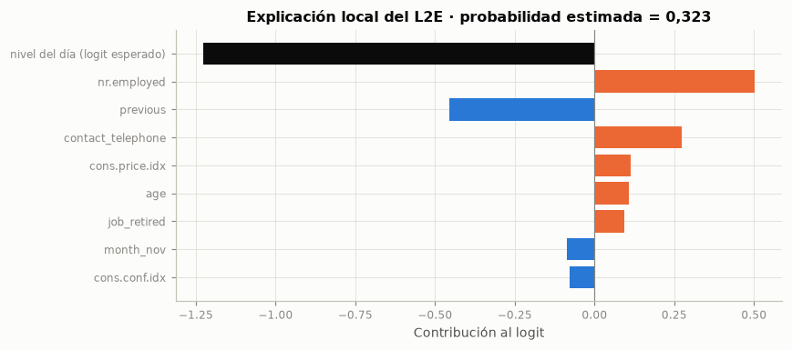
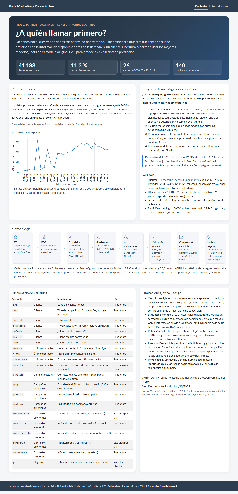
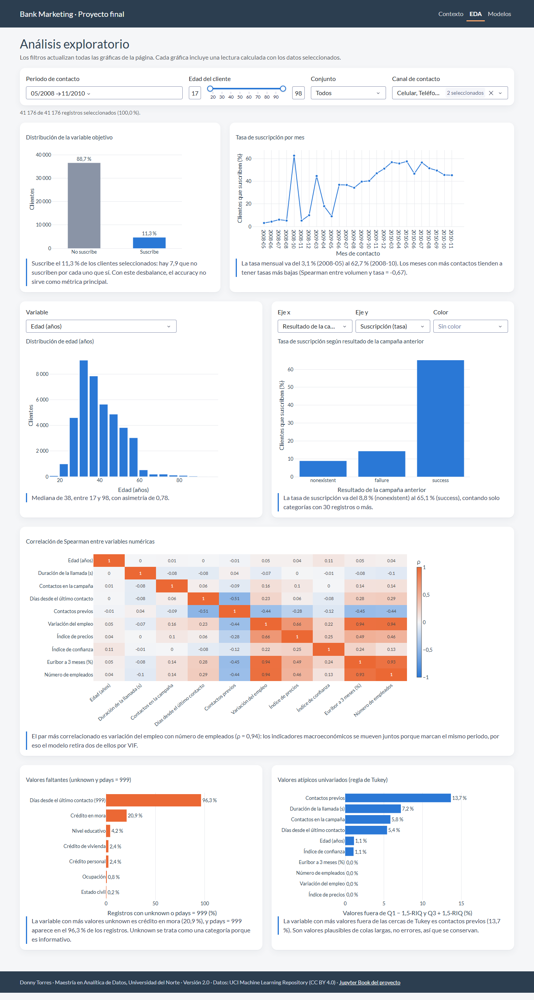
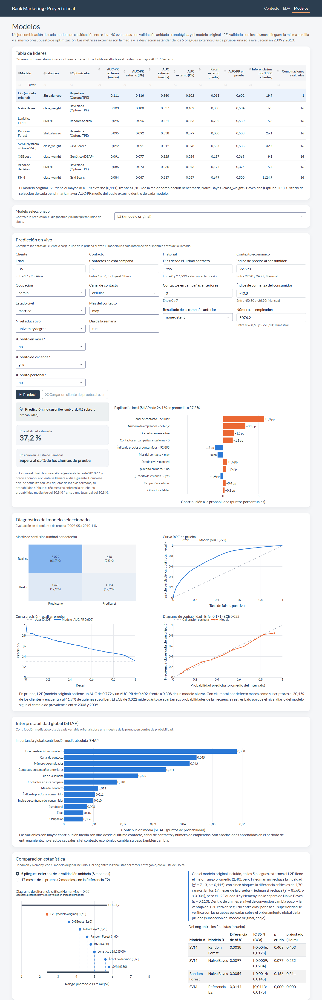
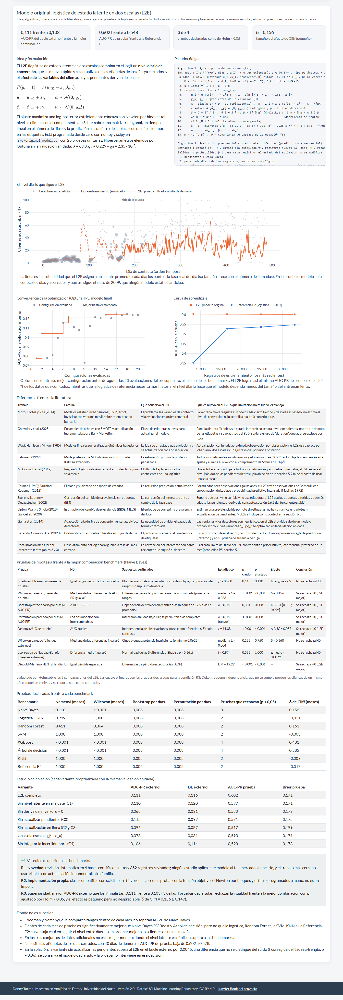

7. Dashboard y despliegue#
7.1 Artefacto del modelo original y prueba de ida y vuelta#
El dashboard nunca entrena modelos (guía, sección 4.2): carga artefactos ya ajustados. El L2E se serializa con joblib (compresión 3) en dos versiones: modelo.joblib, con el estado al cierre del entrenamiento, que es el que se evaluó en la prueba, y modelo_vigente.joblib, que además asimiló con actualizar las etiquetas de todos los días de la prueba y es el que el dashboard debe usar para predecir un día nuevo. Junto a ellos, metadata.json registra las versiones de las librerías, la semilla, los hiperparámetros, el esquema de entrada y las métricas del bucle externo y de la prueba. La prueba de ida y vuelta verifica que el modelo leído de disco produce exactamente las mismas predicciones que el modelo en memoria. Estos artefactos referencian el paquete de investigación bm; la versión que carga el dashboard la genera scripts/exportar_dashboard_l2e.py con la copia de producción de la clase y repite la misma verificación (sección 7.3).
| Verificación | Criterio | Resultado |
|---|---|---|
| predict_proba (estático): memoria frente a disco | igualdad exacta | idénticas |
| predict_proba_secuencial: memoria frente a disco | igualdad exacta | idénticas |
| frente al puntaje evaluado en la prueba (otro proceso) | diferencia máxima < 1e−10 | diferencia máxima 4.4e-16 (coinciden) |
| Tamaño (KB) | |
|---|---|
| metadata.json | 3,2 |
| modelo.joblib | 18,2 |
| modelo_vigente.joblib | 18,6 |
La comparación con el puntaje de la prueba se hace con tolerancia porque ese puntaje se calculó en otro proceso, con BLAS de un solo hilo; el orden de las sumas de punto flotante cambia en el último dígito.
7.2 Predicción en vivo con explicación local#
Así se usa el modelo en el dashboard: se toma un cliente con sus variables previas a la llamada, se le asigna el día siguiente al último asimilado y el modelo vigente devuelve la probabilidad y su descomposición exacta en el logit: el nivel del día y la contribución de cada variable del cliente.

| Valor | |
|---|---|
| age | 74 |
| campaign | 3 |
| pdays | 999 |
| previous | 1 |
| cons.price.idx | 94,767 |
| cons.conf.idx | -50,800 |
| nr.employed | 4 963,600 |
| job | retired |
| marital | married |
| education | professional.course |
| default | no |
| housing | yes |
| loan | no |
| contact | cellular |
| month | nov |
| day_of_week | fri |
| poutcome | failure |
Interpretación. Para este cliente, con el estado vigente al cierre de 2010-11, el L2E estima una probabilidad de suscripción de 0,323. El nivel del día aporta -1,23 al logit y la variable con mayor contribución es nr.employed (0,50).
De esta forma, la explicación local separa lo que se debe al momento (el nivel del día, común a todos los clientes que se llamen ese día) de lo que se debe al cliente, y responde a la pregunta que se hace un asesor: si conviene llamarlo hoy y por qué.
Por tanto, corresponde incorporar esta salida, la trayectoria del nivel y la tabla de pruebas de la sección 6.7 a la subsección del modelo original de la página Modelos del dashboard (sección 7.3).
7.3 Dashboard desplegado: arquitectura, decisiones de diseño y despliegue#
El dashboard está en línea en Render: https://proyecto-final-bank-marketing.onrender.com. Tiene las tres páginas que pide la guía (Contexto, EDA y Modelos) y, desde este entregable, el L2E es un modelo más del dashboard: encabeza la tabla de líderes, se puede elegir en la predicción en vivo, tiene su diagnóstico y su SHAP global, entra al diagrama de diferencia crítica y cuenta con su propia subsección.
Arquitectura. El repositorio (DTL-DA/proyecto-final-bank-marketing) sigue la estructura de la sección 7.2 de la guía; este cuaderno y su código de investigación están en cuarto_entregable/:
proyecto-final-bank-marketing/
├── app.py punto de entrada: crea la aplicación multipágina y expone server (gunicorn)
├── pages/ contexto.py, eda.py y modelos.py (una página por sección, con sus callbacks)
├── src/
│ ├── original_model.py clase del modelo original (copia de producción de bm.modelo_original)
│ ├── data.py carga y caché de datos, artefactos y resultados precalculados
│ ├── plots.py funciones que construyen las figuras, con una plantilla común de Plotly
│ ├── explicaciones.py valores SHAP por permutaciones (sin cargar la librería shap en el servidor)
│ └── componentes.py componentes propios de los pipelines de los benchmarks
├── artifacts/ un directorio por modelo con modelo.joblib y metadata.json (l2e incluido)
├── data/ datos livianos para el EDA y resultados precalculados (data/resultados)
├── assets/ hoja de estilos
├── tests/ pruebas con pytest: aplicación, artefactos, explicaciones y modelo original
├── book/ fuentes del Jupyter Book (_config.yml, _toc.yml, references.bib)
├── cuarto_entregable/ este cuaderno, src/bm, scripts, pruebas y resultados del modelo original
├── requirements.txt versiones exactas
└── render.yaml configuración del despliegue
Integración del modelo original. scripts/exportar_dashboard_l2e.py toma el modelo final de la sección 7.1, reemplaza las referencias al paquete de investigación bm por la copia de producción src/original_model.py (el algoritmo es idéntico línea por línea, y tests/test_original_model.py lo verifica junto con las 25 pruebas unitarias del modelo), repite la prueba de ida y vuelta, guarda los dos artefactos en artifacts/l2e/ y agrega el L2E a las tablas precalculadas del dashboard. Como el dashboard nunca entrena ni optimiza, todo lo que muestra sale de esos artefactos y de esas tablas. Para predecir, el dashboard carga modelo_vigente.joblib y le asigna al cliente el día siguiente al último cerrado (sección 7.2).
Decisiones de diseño.
Un producto, no una colección de gráficos: cada tarjeta responde una pregunta del usuario (a quién llamar primero, qué tan confiable es la probabilidad, qué modelo es mejor y por qué) y termina con una frase de interpretación.
Tema y color:
dash-bootstrap-componentscon el tema FLATLY, barra de navegación fija y una paleta de dos colores más grises, validada para visión normal y para las tres formas de daltonismo. El color sigue a la entidad: el L2E es siempre naranja y los benchmarks, azules, y la identidad nunca depende solo del color, porque cada serie tiene su etiqueta.Rendimiento en el plan gratuito: los datos y los ocho modelos se cargan una sola vez con
functools.lru_cache; los valores SHAP se estiman con un estimador por permutaciones propio, porque la libreríashapno cabe en la memoria junto con los modelos, y el L2E solo suma 37 KB de artefactos.Robustez y accesibilidad: el formulario de predicción se genera desde el esquema de variables y valida tipos y rangos; un error se informa con
dbc.Alertsin detener la aplicación. Las tablas y las figuras usan la rejilla dedbc.Rowydbc.Colpara escritorio y tableta, con etiquetas descriptivas y contraste suficiente.
Guía de despliegue. (1) python app.py levanta el dashboard en local en http://127.0.0.1:8050. (2) requirements.txt fija las versiones exactas, incluido gunicorn, y render.yaml fija Python 3.12.10. (3) Render construye con pip install -r requirements.txt y arranca con gunicorn app:server --workers 1 --threads 4 --timeout 120; cada push a la rama main del repositorio dispara un despliegue nuevo. (4) Después de cada despliegue se revisan los registros de construcción y se recorren las tres páginas en la URL pública. En el plan gratuito el servicio se suspende tras 15 minutos sin visitas y la primera carga tarda cerca de un minuto, por lo que conviene abrirlo unos minutos antes de la sustentación.
Capturas. Las capturas se tomaron con scripts/capturas_dashboard.py sobre el dashboard local, con los mismos artefactos y datos que la versión en línea.



